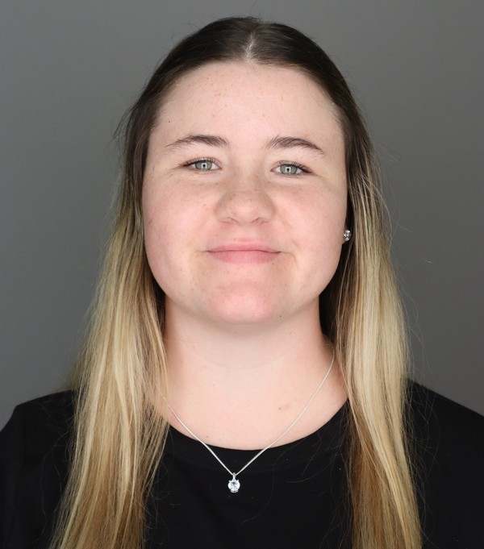
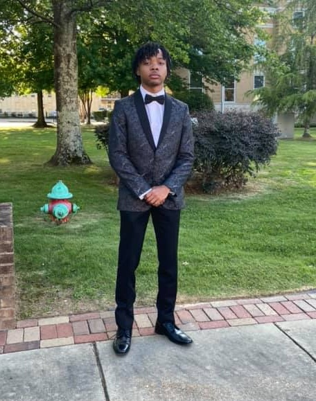

About Us
Kaitlyn Hanson
krhanson3@crimson.ua.edu | 318-220-6194 | LinkedIn | GitHub

Driven computer science student with a solid foundation in C++, Python, Java, and SQL, passionate about backend software engineering and eager to develop efficient, scalable systems while contributing to innovative, high-performance solutions.
Jaden Sheppard
jdsheppard3@crimson.ua.edu | 205-270-9822 | LinkedIn | GitHub

Computer science student with interests in software engineering and data analytics, focused on building reliable user centered applications and developing practical solutions through clean architecture and thoughtful system design.
Ryan Kutella
rfkutella@crimson.ua.edu | 847-708-2227 | LinkedIn | GitHub

Computer Science student at The University of Alabama with over 7 years of programming experience. I am passionate about software development and enjoy turning creative ideas into real-world solutions
Maddox Guthrie
mbguthrie1@crimson.ua.edu | 615-979-9334 | LinkedIn | GitHub
Computer Science Student with several years of programming experience. Passionate about software development, with a strong interest in backend systems and high-level technical challenges such as optimization and compiler theory.